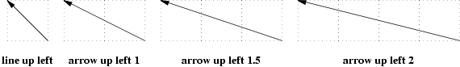
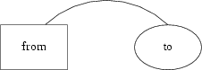
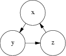

ABSTRACT
Eric S. Raymond
⟨esr@snark.thyrsus.com⟩
The pic language is a troff extension that makes it easy to create and alter box-and-arrow diagrams of the kind frequently used in technical papers and textbooks. This paper is both an introduction to and reference for gpic(1), the implementation distributed by the Free Software Foundation for use with groff(1).
The pic language provides an easy way to write procedural box-and-arrow diagrams to be included in troff documents. The language is sufficiently flexible to be quite useful for state charts, Petri-net diagrams, flow charts, simple circuit schematics, jumper layouts, and other kinds of illustration involving repetitive uses of simple geometric forms and splines. Because these descriptions are procedural and object-based, they are both compact and easy to modify.
The gpic(1) implementation of pic is distributed by the Free Software Foundation for use with their groff(1) implementation of troff. Because both implementations are widely available in source form for free, they are good bets for writing very portable documentation.
The original 1984 pre-ditroff(1) version of pic is long obsolete. The rewritten 1991 version is still available as part of the Documenter’s Work Bench module of System V.
Where differences between Documenter’s Work Bench (1991) pic and GNU pic need to be described, original pic is referred to as “DWB pic”. Details on the history of the program are given at the end of this document.
In this document, the gpic(1) extensions will be marked as such.
Every pic description is a little program, which gets compiled by pic(1) into gtroff(1) macros. Programs that process or display gtroff(1) output need not know or care that parts of the image began life as pic descriptions.
The pic(1) program tries to translate anything between .PS and .PE markers, and passes through everything else. The normal definitions of .PS and .PE in the ms macro package and elsewhere have also the side-effect of centering the pic output on the page.
If you make a pic syntax error, gpic(1) will issue an error message in the standard gcc(1)-like syntax. A typical error message looks like this,
pic:pic.ms:<nnn>: parse error before ‘<token>’
pic:pic.ms:<nnn>: giving up on this picture
where ⟨nnn⟩ is a line number, and ⟨token⟩ is a token near (usually just after) the error location.
Pictures are described procedurally, as collections of objects connected by motions. Normally, pic tries to string together objects left-to-right in the sequence they are described, joining them at visually natural points. Here is an example illustrating the flow of data in pic processing:
Figure 3-1: Flow of pic data
This was produced from the following pic program:
.PS
ellipse "document";
arrow;
box width 0.6 "\fIpic\/\fP(1)"
arrow;
box width 1.1 "\fIgtbl\/\fP(1) or \fIgeqn\/\fP(1)" "(optional)" dashed;
arrow;
box width 0.6 "\fIgtroff\/\fP(1)";
arrow;
ellipse "PostScript"
.PE
This little program illustrates several pic basics. Firstly, we see how to invoke three object types; ellipses, arrows, and boxes. We see how to declare text lines to go within an object (and that text can have font changes in it). We see how to change the line style of an object from solid to dashed. And we see that a box can be made wider than its default size to accommodate more text (we’ll discuss this facility in detail in the next section).
We also get to see pic’s simple syntax. Statements are ended by newlines or semicolons. String quotes are required around all text arguments, whether or not they contain spaces. In general, the order of command arguments and modifiers like “width 1.2” or “dashed” doesn’t matter, except that the order of text arguments is significant.
Here are all but one of the basic pic objects at their default sizes:
Figure 3-2: Basic pic objects
The missing simple object type is a spline. There is also a way to collect objects into block composites which allows you to treat the whole group as a single object (resembling a box) for many purposes. We’ll describe both of these later on.
The box, ellipse, circle, and block composite objects are closed; lines, arrows, arcs and splines are open. This distinction will often be important in explaining command modifiers.
Figure 3-2 was produced by the following pic program, which introduces some more basic concepts:
.PS
box "box";
move;
line "line" "";
move;
arrow "arrow" "";
move;
circle "circle";
move;
ellipse "ellipse";
move;
arc; down; move; "arc"
.PE
The first thing to notice is the move command, which moves a default distance (1/2 inch) in the current movement direction.
Secondly, see how we can also decorate lines and arrows with text. The line and arrow commands each take two arguments here, specifying text to go above and below the object. If you wonder why one argument would not do, contemplate the output of arrow "ow!":
Figure 3-3: Text centered on an arrow
When a command takes one text string, pic tries to place it at the object’s geometric center. As you add more strings, pic treats them as a vertical block to be centered. The program
line "1";
line "1" "2";
line "1" "2" "3";
line "1" "2" "3" "4";
line "1" "2" "3" "4" "5";
for example, gives you this:
Figure 3-4: Effects of multiple text arguments
The last line of Figure 3.2’s program, ‘arc; down; move; "arc"’, describing the captioned arc, introduces several new ideas. Firstly, we see how to change the direction in which objects are joined. Had we written arc; move; "arc", omitting down the caption would have been joined to the top of the arc, like this:
Figure 3-5: Result of arc; move;
This is because drawing an arc changes the default direction to the one its exit end points at. To reinforce this point, consider:
Figure 3-6: Result of arc cw; move;
All we’ve done differently here is specify “cw” for a clockwise arc (“ccw” specifies counter-clockwise direction). Observe how it changes the default direction to down, rather than up.
Another good way to see this via with the following program:
line; arc; arc cw; line
which yields:
Figure 3-7: Result of line; arc; arc cw; line
Notice that we did not have to specify “up” for the second arc to be joined to the end of the first.
Finally, observe that a string, alone, is treated as text to be surrounded by an invisible box of a size either specified by width and height attributes or by the defaults textwid and textht. Both are initially zero (because we don’t know the default font size).
Sizes are specified in inches. If you don’t like inches, it’s possible to set a global style variable scale that changes the unit. Setting scale = 2.54 will effectively change the internal unit to centimeters (all other size variable values will be scaled correspondingly).
Here are the default sizes for pic objects:
The simplest way to think about these defaults is that they make the other basic objects fit snugly into a default-sized box.
Text is rendered in the current font with normal troff line spacing. Boxes, circles, and ellipses do not automatically resize to fit enclosed text. Thus, if you say box "this text far too long for a default box" you’ll get this:
Figure 4-1: Boxes do not automatically resize
which is probably not the effect you want.
To change the box size, you can specify a box width with the “width” modifier:
Figure 4-2: Result of box width 3
This modifier takes a dimension in inches. There is also a “height” modifier that will change a box’s height. The width keyword may be abbreviated to wid; the height keyword to ht.
To change the size of a circle, give it a rad[ius] or diam[eter] modifier; this changes the radius or diameter of the circle, according to the numeric argument that follows.
Figure 4-3: Circles with increasing radii
The move command can also take a dimension, which just tells it how many inches to move in the current direction.
Ellipses are sized to fit in the rectangular box defined by their axes, and can be resized with width and height like boxes.
You can also change the radius of curvature of an arc with rad[ius] (which specifies the radius of the circle of which the arc is a segment). Larger values yield flatter arcs.
Figure 4-4: arc rad with increasing radii
Observe that because an arc is defined as a quarter circle, increasing the radius also increases the size of the arc’s bounding box.
In place of a dimension specification, you can use the keyword same. This gives the object the same size as the previous one of its type. As an example, the program
.PS
box; box wid 1 ht 1; box same; box
.PE
gives you
Figure 4-5: The same keyword
It is possible to specify diagonal lines or arrows by adding multiple up, down, left, and right modifiers to the line object. Any of these can have a multiplier. To understand the effects, think of the drawing area as being gridded with standard-sized boxes.

Figure 5-1: Diagonal arrows (dotted boxes show the implied 0.5-inch grid)
A “line” or “arrow” object may actually be a path consisting of any number of segments of varying lengths and directions. To describe a path, connect several line or arrow commands with the keyword then.
Figure 5-2: line right 1 then down .5 left 1 then right 1
If you start a path with the spline keyword, the path vertices are treated as control points for a spline curve fit.
Figure 5-3: spline right 1 then down .5 left 1 then right 1
You can describe many natural-looking but irregular curves this way. For example:
Figure 5-4: Two more spline examples
Note the arrow decorations. Arrowheads can be applied naturally to any path-based object, line or spline. We’ll see how in the next section.
We’ve already seen that the modifier dashed can change the line style of an object from solid to dashed. GNU gpic permits you to dot or dash ellipses, circles, and arcs (and splines in TeX mode only); some versions of DWB may only permit dashing of lines and boxes. It’s possible to change the dash interval by specifying a number after the modifier.
Figure 6-1: Dashed objects
Another available qualifier is dotted. GNU gpic permits you to dot or dash ellipses, circles, and arcs (and splines in TeX mode only); some versions of DWB may only permit dashing of lines and boxes. It too can be suffixed with a number to specify the interval between dots:
Figure 6-2: Dotted objects
It is also possible, in GNU gpic only, to modify a box so it has rounded corners:
Figure 6-3: box rad with increasing radius values
Radius values higher than half the minimum box dimension are silently truncated to that value.
Lines and arcs can be decorated as well. Any line or arc (and any spline as well) can be decorated with arrowheads by adding one or more as modifiers:
Figure 6-4: Double-headed line made with line <- ->
In fact, the arrow command is just shorthand for line ->. And there is a double-head modifier <->, so the figure above could have been made with line <->.
Arrowheads have a width attribute, the distance across the rear; and a height attribute, the length of the arrowhead along the shaft.
Arrowhead style is controlled by the style variable arrowhead. The DWB and GNU versions interpret it differently. DWB defaults to open arrowheads and an arrowhead value of 2; the Kernighan paper says a value of 7 will make solid arrowheads. GNU gpic defaults to solid arrowheads and an arrowhead value of 1; a value of 0 will produce open arrowheads. Note that solid arrowheads are always filled with the current outline color.
It’s also possible to change the line thickness of an object (this is a GNU extension, DWB pic doesn’t support it). The default thickness of the lines used to draw objects is controlled by the linethick variable. This gives the thickness of lines in points. A negative value means use the default thickness: in TeX output mode, this means use a thickness of 8 milliinches; in TeX output mode with the -c option, this means use the line thickness specified by .ps lines; in troff output mode, this means use a thickness proportional to the pointsize. A zero value means draw the thinnest possible line supported by the output device. Initially it has a value of -1. There is also a thickness attribute (which can be abbreviated to thick). For example, circle thickness 1.5 would draw a circle using a line with a thickness of 1.5 points. The thickness of lines is not affected by the value of the scale variable, nor by any width or height given in the .PS line.
The modifier invis[ible] makes an object entirely invisible. This used to be useful for positioning text in an invisible object that is properly joined to neighboring ones. Newer DWB versions and GNU pic treat stand-alone text in exactly this way.
It is possible to fill boxes, circles, and ellipses. The modifier fill[ed] accomplishes this. You can suffix it with a fill value; the default is given by the stule variable fillval.
DWB pic and gpic have opposite conventions for fill values and different defaults. DWB fillval defaults to 0.3 and smaller values are darker; GNU fillval uses 0 for white and 1 for black.
Figure 6-5: circle fill; move; circle fill 0.4; move; circle fill 0.9;
GNU gpic makes some additional guarantees. A fill value greater than 1 can also be used: this means fill with the shade of gray that is currently being used for text and lines. Normally this will be black, but output devices may provide a mechanism for changing this. The invisible attribute does not affect the filling of objects. Any text associated with a filled object will be added after the object has been filled, so that the text will not be obscured by the filling.
The closed-object modifier solid is equivalent to fill with the darkest fill value (DWB pic had this capability but mentioned it only in a reference section).
As a GNU extension, three additional modifiers are available to specify colored objects. outline sets the color of the outline, shaded the fill color, and color sets both. All three keywords expect a suffix specifying the color. Example:

Figure 6-6: box color "yellow"; arrow color "cyan"; circle shaded "green" outline "black";
Alternative spellings are colour, colored, coloured, and outlined.
Currently, color support is not available in TeX mode. Predefined color names for groff(1) are in the device macro files, for example ps.tmac; additional colors can be defined with the .defcolor request (see the manual page of GNU troff(1) for more details).
pic assumes that at the beginning of a picture both glyph and fill color are set to the default value.
By default, text is centered at the geometric center of the object it is associated with. The modifier ljust causes the left end to be at the specified point (which means that the text lies to the right of the specified place!), the modifier rjust puts the right end at the place. The modifiers above and below center the text one half line space in the given direction.
Text attributes can be combined:
Figure 7-1: Text attributes
What actually happens is that n text strings are centered in a box that is textwid wide by textht high. Both these variables are initially zero (that is pic’s way of not making assumptions about [tg]roff(1)’s default point size).
In GNU gpic, objects can have an aligned attribute. This will only work when the postprocessor is grops. Any text associated with an object having the aligned attribute will be rotated about the center of the object so that it is aligned in the direction from the start point to the end point of the object. Note that this attribute will have no effect for objects whose start and end points are coincident.
We’ve already seen how to change the direction in which objects are composed from rightwards to downwards. Here are some more illustrative examples:
Figure 8-1: Effects of different motion directions (right and left)
Figure 8-2: Effects of different motion directions (up and down)
Something that may appear surprising happens if you change directions in the obvious way:
Figure 8-3: box; arrow; circle; down; arrow; ellipse
You might have expected that program to yield this:
Figure 8-4: More intuitive?
But, in fact, to get Figure 8.3 you have to do this:
.PS
box;
arrow;
circle;
move to last circle .s;
down;
arrow;
ellipse
.PE
Why is this? Because the exit point for the current direction is already set when you draw the object. The second arrow in Figure 8.2 dropped downwards from the circle’s attachment point for an object to be joined to the right.
The meaning of the command move to last circle .s should be obvious. In order to see how it generalizes, we’ll need to go into detail on two important topics; locations and object names.
The most natural way to name locations in pic is relative to objects. In order to do this, you have to be able you have to be able to name objects. The pic language has rich facilities for this that try to emulate the syntax of English.
The simplest (and generally the most useful) way to name an object is with a last clause. It needs to be followed by an object type name; box, circle, ellipse, line, arrow, spline, "", or [] (the last type refers to a composite object which we’ll discuss later). So, for example, the last circle clause in the program attached to Figure 9.1.3 refers to the last circle drawn.
More generally, objects of a given type are implicitly numbered (starting from 1). You can refer to (say) the third ellipse in the current picture with 3rd ellipse, or to the first box as 1st box, or to the fifth text string (which isn’t an attribute to another object) as 5th "".
Objects are also numbered backwards by type from the last one. You can say 2nd last box to get the second-to-last box, or 3rd last ellipse to get the third-to-last ellipse.
In places where nth is allowed, ‘expr’th is also allowed. Note that ’th is a single token: no space is allowed between the ’ and the th. For example,
for i = 1 to 4 do {
line from ‘i’th box.nw to ‘i+1’th box.se
}
|
You can also specify an object by referring to a label. A label is a word (which must begin with a capital letter) followed by a colon; you declare it by placing it immediately before the object drawing command. For example, the program
.PS
A: box "first" "object"
move;
B: ellipse "second" "object"
move;
arrow right at A .r;
.PE
declares labels A and B for its first and second objects. Here’s what that looks like:
Figure 9-1: Example of label use
The at statement in the fourth line uses the label A (the behavior of at will be explained in the next section). We’ll see later on that labels are most useful for referring to block composite objects.
Labels are not constants but variables (you can view colon as a sort of assignment). You can say something like A: A + (1,0); and the effect will be to reassign the label A to designate a position one inch to the right of its old value.
The location of points can be described in many different ways. All these forms are interchangeable as for as the pic language syntax is concerned; where you can use one, any of the others that would make semantic sense are allowed.
The special label Here always refers to the current position.
The simplest is absolute coordinates in inches; pic uses a Cartesian system with (0, 0) at the lower left corner of the virtual drawing surface for each picture (that is, X increases to the right and Y increases upwards). An absolute location may always be written in the conventional form as two comma-separated numbers surrounded by parentheses (and this is recommended for clarity). In contexts where it creates no ambiguity, the pair of X and Y coordinates suffices without parentheses.
It is a good idea to avoid absolute coordinates, however. They tend to make picture descriptions difficult to understand and modify. Instead, there are quite a number of ways to specify locations relative to pic objects and previous locations.
The symbol Here always refers to the position of the last object drawn or the destination of the last move.
Alone and unqualified, a last circle or any other way of specifying a closed-object or arc location refers as a position to the geometric center of the object. Unqualified, the name of a line or spline object refers to the position of the object start.
Also, pic objects have quite a few named locations associated with them. One of these is the object center, which can be indicated (redundantly) with the suffix .center (or just .c). Thus, last circle .center is equivalent to last circle.
Every closed object (box, circle, ellipse, or block composite) also has eight compass points associated with it;
Figure 10-1: Compass points
these are the locations where eight compass rays from the geometric center would intersect the figure. So when we say last circle .s we are referring to the south compass point of the last circle drawn. The explanation of Figure 7.3’s program is now complete.
(In case you dislike compass points, the names .top, .bottom, .left and .right are synonyms for .n, .s, .e, and .w respectively; they can even be abbreviated to .t, .b, .l and .r).
The names center, top, bottom, left, right, north, south, east, and west can also be used (without the leading dot) in a prefix form marked by of; thus, center of last circle and top of 2nd last ellipse are both valid object references. Finally, the names left and right can be prefixed with upper and lower which both have the obvious meaning.
Arc objects also have compass point; they are the compass points of the implied circle.
Every open object (line, arrow, arc, or spline) has three named points: .start, .center (or .c), and .end. They can also be used without leading dots in the of prefix form. The center of an arc is the center of its circle, but the center of a line, path, or spline is halfway between its endpoints.
Figure 10-2: Special points on open objects
Once you have two positions to work with, there are several ways to combine them to specify new positions.
Positions may be added or subtracted to yield a new position (to be more precise, you can only add a position and an expression pair; the latter must be on the right side of the addition or subtraction sign). The result is the conventional vector sum or difference of coordinates. For example, last box .ne + (0.1, 0) is a valid position. This example illustrates a common use, to define a position slightly offset from a named one (say, for captioning purposes).
A position may be interpolated between any two positions. The syntax is ‘fraction of the way between position1 and position2’. For example, you can say 1/3 of the way between here and last ellipse .ne. The fraction may be in numerator/denominator form or may be an ordinary number (values are not restricted to [0,1]). As an alternative to this verbose syntax, you can say ‘fraction <position1 , position2>’; thus, the example could also be written as 1/3 <here, last ellipse>.
Figure 10-3: P: 1/3 of the way between last arrow .start and last arrow .end
This facility can be used, for example, to draw double connections.
Figure 10-4: Doubled arrows
You can get Figure 10-4 from the following program:
.PS
A: box "yin"; move;
B: box "yang";
arrow right at 1/4 <A.e,A.ne>;
arrow left at 1/4 <B.w,B.sw>;
.PE
Note the use of the short form for interpolating points.
Given two positions p and q, the position (p, q) has the X coordinate of p and the Y coordinate of q. This can be helpful in placing an object at one of the corners of the virtual box defined by two other objects.
Figure 10-5: Using (x, y) composition
There are four ways to use locations; at, from, to, and with. All three are object modifiers; that is, you use them as suffixes to a drawing command.
The at modifier says to draw a closed object or arc with its center at the following location, or to draw a line/spline/arrow starting at the following location.
The to modifier can be used alone to specify a move destination. The from modifier can be used alone in the same way as at.
The from and to modifiers can be used with a line or arc command to specify start and end points of the object. In conjunction with named locations, this offers a very flexible mechanism for connecting objects. For example, the following program
.PS
box "from"
move 0.75;
ellipse "to"
arc cw from 1/3 of the way \
between last box .n and last box .ne to last ellipse .n;
.PE
yields:

Figure 10-6: A tricky connection specified with English-like syntax
The with modifier allows you to identify a named attachment point of an object (or a position within the object) with another point. This is very useful for connecting objects in a natural way. For an example, consider these two programs:

Figure 10-7: Using the with modifier for attachments
When drawing lines between circles that don’t intersect them at a compass point, it is useful to be able to shorten a line by the radius of the circle at either or both ends. Consider the following program:
.PS
circle "x"
circle "y" at 1st circle - (0.4, 0.6)
circle "z" at 1st circle + (0.4, -0.6)
arrow from 1st circle to 2nd circle chop
arrow from 2nd circle to 3rd circle chop
arrow from 3rd circle to 1st circle chop
.PE
It yields the following:

Figure 10-8: The chop modifier
Notice that the chop attribute moves arrowheads rather than stepping on them. By default, the chop modifier shortens both ends of the line by circlerad. By suffixing it with a number you can change the amount of chopping.
If you say line ... chop r1 chop r2 with r1 and r2 both numbers, you can vary the amount of chopping at both ends. You can use this in combination with trigonometric functions to write code that will deal with more complex intersections.
There are two different ways to group objects in pic; brace grouping and block composites.
The simpler method is simply to group a set of objects within curly bracket or brace characters. On exit from this grouping, the current position and direction are restored to their value when the opening brace was encountered.
A block composite object is created a series of commands enclosed by square brackets. The composite can be treated for most purposes like a single closed object, with the size and shape of its bounding box. Here is an example. The program fragment
A: [
circle;
line up 1 at last circle .n;
line down 1 at last circle .s;
line right 1 at last circle .e;
line left 1 at last circle .w;
box dashed with .nw at last circle .se + (0.2, -0.2);
Caption: center of last box;
]
yields the block in figure 11-1, which we show both with and without its attachment points. The block’s location becomes the value of A.
Figure 11-1: A sample composite object
To refer to one of the composite’s attachment points, you can say (for example) A .s. For purposes of object naming, composites are a class. You could write last [] .s as an equivalent reference, usable anywhere a location is needed. This construction is very important for putting together large, multi-part diagrams.
Blocks are also a variable-scoping mechanism, like a groff(1) environment. All variable assignments done inside a block are undone at the end of it. To get at values within a block, write a name of the block followed by a dot, followed by the label you want. For example, we could refer the the center of the box in the above composite as last [] .Caption or A.Caption.
This kind of reference to a label can be used in any way any other location can be. For example, if we added "Hi!" at A.Caption the result would look like this:
Figure 11-2: Adding a caption using interior labeling
You can also use interior labels in either part of a with modifier. This means that the example composite could be placed relative to its caption box by a command containing with A.Caption at.
Note that both width and height of the block composite object are always positive:
Figure 11-3: Composite block objects always have positive width and height
Blocks may be nested. This means you can use block attachment points to build up complex diagrams hierarchically, from the inside out. Note that last and the other sequential naming mechanisms don’t look inside blocks, so if you have a program that looks like
.PS
P: [box "foo"; ellipse "bar"];
Q: [
[box "baz"; ellipse "quxx"]
"random text";
]
arrow from 2nd last [];
.PE
the arrow in the last line will be attached to object P, not object Q.
In DWB pic, only references one level deep into enclosed blocks were permitted. GNU gpic removes this restriction.
The combination of block variable scoping, assignability of labels and the macro facility that we’ll describe later on can be used to simulate functions with local variables (just wrap the macro body in block braces).
There are a number of global style variables in pic that can be used to change its overall behavior. We’ve mentioned several of them in previous sections. They’re all described here. For each variable, the default is given.
Any of these variables can be set with a simple assignment statement. For example:
Figure 12-1: boxht=1; boxwid=0.3; movewid=0.2; box; move; box; move; box; move; box;
In GNU pic, setting the scale variable re-scales all size-related state variables so that their values remain equivalent in the new units.
The command reset resets all style variables to their defaults. You can give it a list of variable names as arguments (optionally separated by commas), in which case it resets only those.
State variables retain their values across pictures until reset.
A number is a valid expression, of course (all numbers are stored internally as floating-point). Decimal-point notation is acceptable; in GNU gpic, scientific notation in C’s ‘e’ format (like 5e-2) is accepted.
Anywhere a number is expected, the language will also accept a variable. Variables may be the built-in style variable described in the last section, or new variables created by assignment.
DWB pic supports only the ordinary assignment via =, which defines the variable (on the left side of the equal sign) in the current block if it is not already defined there, and then changes the value (on the right side) in the current block. The variable is not visible outside of the block. This is similar to the C programming language where a variable within a block shadows a variable with the same name outside of the block.
GNU gpic supports an alternate form of assignment using :=. The variable must already be defined, and the value will be assigned to that variable without creating a variable local to the current block. For example, this
x=5
y=5
[
x:=3
y=3
]
print x " " y
prints 3 5.
You can use the height, width, radius, and x and y coordinates of any object or corner in expressions. If A is an object label or name, all the following are valid:
A.x # x coordinate of the center of A
A.ne.y # y coordinate of the northeast corner of A
A.wid # the width of A
A.ht # and its height
2nd last circle.rad # the radius of the 2nd last circle
Note the second expression, showing how to extract a corner coordinate.
Basic arithmetic resembling those of C operators are available; +, *, -, /, and %. So is ^ for exponentiation. Grouping is permitted in the usual way using parentheses. GNU gpic allows logical operators to appear in expressions; ! (logical negation, not factorial), &&, ||, ==, !=, >=, <=, <, >.
Various built-in functions are supported: sin(x), cos(x), log(x), exp(x), sqrt(x), max(x,y), atan2(x,y), min(x,y), int(x), rand(), and srand(). Both exp and log are base 10; int does integer truncation; rand() returns a random number in [0-1), and srand() sets the seed for a new sequence of pseudo-random numbers to be returned by rand() (srand() is a GNU extension).
GNU gpic also documents a one-argument form or rand, rand(x), which returns a random number between 1 and x, but this is deprecated and may be removed in a future version.
The function sprintf() behaves like a C sprintf(3) function that only takes %, %e, %f, and %g format strings.
You can define macros in pic. This is useful for diagrams with repetitive parts. In conjunction with the scope rules for block composites, it effectively gives you the ability to write functions.
The syntax is
define name { replacement text }
This defines name as a macro to be replaced by the replacement text (not including the braces). The macro may be called as
name(arg1, arg2, ... argn)
The arguments (if any) will be substituted for tokens $1, $2 ... $n appearing in the replacement text.
As an example of macro use, consider this:
.PS
# Plot a single jumper in a box, $1 is the on-off state.
define jumper { [
shrinkfactor = 0.8;
Outer: box invis wid 0.45 ht 1;
# Count on end ] to reset these
boxwid = Outer.wid * shrinkfactor / 2;
boxht = Outer.ht * shrinkfactor / 2;
box fill (!$1) with .s at center of Outer;
box fill ($1) with .n at center of Outer;
] }
# Plot a block of six jumpers.
define jumperblock {
jumper($1);
jumper($2);
jumper($3);
jumper($4);
jumper($5);
jumper($6);
jwidth = last [].Outer.wid;
jheight = last [].Outer.ht;
box with .nw at 6th last [].nw wid 6*jwidth ht jheight;
# Use {} to avoid changing position from last box draw.
# This is necessary so move in any direction will work as expected
{"Jumpers in state $1$2$3$4$5$6" at last box .s + (0, -0.2);}
}
# Sample macro invocations.
jumperblock(1,1,0,0,1,0);
move;
jumperblock(1,0,1,0,1,1);
.PE
It yields the following:
Figure 14-1: Sample use of a macro
This macro example illustrates how you can combine [], brace grouping, and variable assignment to write true functions.
One detail the example above does not illustrate is the fact that macro argument parsing is not token-oriented. If you call jumper( 1 ), the value of $1 will be " 1 ". You could even call jumper(big string) to give $1 the value "big string".
If you want to pass in a coordinate pair, you can avoid getting tripped up by the comma by wrapping the pair in parentheses.
Macros persist through pictures. To undefine a macro, say undef name; for example,
undef jumper
undef jumperblock
would undefine the two macros in the jumper block example.
Commands that import or export data between pic and its environment are described here.
The statement
copy filename
inserts the contents of filename in the pic input stream. Any .PS/.PE pair in the file will be ignored. This, you can use this to include pre-generated images.
A variant of this statement replicates the copy thru feature of grap(1). The call
copy filename thru macro
calls macro (which may be either a name or replacement text) on the arguments obtained by breaking each line of the file into blank-separated fields. The macro may have up to 9 arguments. The replacement text may be delimited by braces or by a pair of instances of any character not appearing in the rest of the text.
If you write
copy thru macro
omitting the filename, lines to be parsed are taken from the input source up to the next .PE.
In either of the last two copy commands, GNU gpic permits a trailing ‘until word’ clause to be added which terminates the copy when the first word matches the argument (the default behavior is therefore equivalent to until .PE).
Accordingly, the command
.PS copy thru % circle at ($1,$2) % until "END" 1 2 3 4 5 6 END box .PE |
is equivalent to
.PS circle at (1,2) circle at (3,4) circle at (5,6) box .PE |
The command print accepts any number of arguments, concatenates their output forms, and writes the result to standard error. Each argument must be an expression, a position, or a text string.
If you write
command arg...
pic concatenates the arguments and pass them through as a line to troff or TeX. Each arg must be an expression, a position, or text. This has a similar effect to a line beginning with . or \, but allows the values of variables to be passed through.
The command
sh { anything... }
macro-expands the text in braces, then executes it as a shell command. This could be used to generate images or data tables for later inclusion. The delimiters shown as {} here may also be two copies of any one character not present in the shell command text. In either case, the body may contain balanced {} pairs. Strings in the body may contain balanced or unbalanced braces in any case.
The pic language provides conditionals and looping. For example,
pi = atan2(0, -1);
for i = 0 to 2 * pi by 0.1 do {
"-" at (i/2, 0);
"." at (i/2, sin(i)/2);
":" at (i/2, cos(i)/2);
}
which yields this:
Figure 16-1: Plotting with a for loop
The syntax of the for statement is:
for variable = expr1 to expr2 [by [*]expr3] do X body X
The semantics are as follows: Set variable to expr1. While the value of variable is less than or equal to expr2, do body and increment variable by expr3; if by is not given, increment variable by 1. If expr3 is prefixed by * then variable will instead be multiplied by expr3. X can be any character not occurring in body; or the two Xs may be paired braces (as in the sh command).
The syntax of the if statement is as follows:
if expr then X if-true X [else Y if-false Y]
Its semantics are as follows: Evaluate expr; if it is non-zero then do if-true, otherwise do if-false. X can be any character not occurring in if-true. Y can be any character not occurring in if-false.
Eithe or both of the X or Y pairs may instead be balanced pairs of braces ({ and }) as in the sh command. In either case, the if-true may contain balanced pairs of braces. None of these delimiters will be seen inside strings.
All the usual relational operators my be used in conditional expressions; ! (logical negation, not factorial), &&, ||, ==, !=, >=, <=, <, >.
String comparison is also supported using == and !=. String comparisons may need to be parenthesized to avoid syntactic ambiguities.
The output of pic is [gt]roff drawing commands. The GNU gpic(1) command warns that it relies on drawing extensions present in groff(1) that are not present in troff(1).
The DWB pic(1) program will accept one or two arguments to .PS, which is interpreted as a width and height in inches to which the results of pic(1) should be scaled (width and height scale independently). If there is only one argument, it is interpreted as a width to scale the picture to, and height will be scaled by the same proportion.
GNU gpic is less general; it will accept a single width to scale to, or a zero width and a maximum height to scale to. With two non-zero arguments, it will scale to the maximum height.
When pic processes a picture description on input, it passes .PS and .PE through to the postprocessor. The .PS gets decorated with two numeric arguments which are the X and Y dimensions of the picture in inches. The post-processor can use these to reserve space for the picture and center it.
The GNU incarnation of the ms macro package, for example, includes the following definitions:
.de PS
.br
.sp \\n[DD]u
.ie \\n[.$]<2 .@error bad arguments to PS (not preprocessed with pic?)
.el \{\
. ds@need (u;\\$1)+1v
. in +(u;\\n[.l]-\\n[.i]-\\$2/2>?0)
.\}
..
.de PE
.par@reset
.sp \\n[DD]u+.5m
..
Equivalent definition will be supplied by GNU pic(1) if you use the −mpic option; this should make it usable with macro pages other than ms(1).
If .PF is used instead of .PE, the troff position is restored to what it was at the picture start (Kernighan notes that the F stands for “flyback”).
The invocation
.PS <file
causes the contents of file to replace the .PS line. This feature is deprecated; use ‘copy file’ instead).
By default, input lines that begin with a period are passed to the postprocessor, embedded at the corresponding point in the output. Messing with horizontal or vertical spacing is an obvious recipe for bugs, but point size and font changes will usually be safe.
Point sizes and font changes are also safe within text strings, as long as they are undone before the end of string.
The state of [gt]roff’s fill mode is preserved across pictures.
The Kernighan paper notes that there is a subtle problem with complicated equations inside pic pictures; they come out wrong if eqn(1) has to leave extra vertical space for the equation. If your equation involves more than subscripts and superscripts, you must add to the beginning of each equation the extra information space 0. He gives the following example:
arrow
box "$space 0 {H( omega )} over {1 - H( omega )}$"
arrow
Figure 17-1: Equations within pictures
TeX mode is enabled by the −t option. In TeX mode, pic will define a vbox called \graph for each picture. You must yourself print that vbox using, for example, the command
|
\centerline{\box\graph} |
Actually, since the vbox has a height of zero this will produce slightly more vertical space above the picture than below it;
|
\centerline{\raise 1em\box\graph} |
would avoid this.
You must use a TeX driver that supports the tpic specials, version 2.
Lines beginning with \ are passed through transparently; a % is added to the end of the line to avoid unwanted spaces. You can safely use this feature to change fonts or to change the value of \baselineskip. Anything else may well produce undesirable results; use at your own risk. Lines beginning with a period are not given any special treatment.
The TeX mode of pic(1) will not translate troff font and size changes included in text strings!
GNU gpic(1) has a command
plot expr ["text"]
This is a text object which is constructed by using text as a format string for sprintf with an argument of expr. If text is omitted a format string of "%g" is used. Attributes can be specified in the same way as for a normal text object. Be very careful that you specify an appropriate format string; pic does only very limited checking of the string. This is deprecated in favour of sprintf.
Here are a few larger examples, with complete source code. One of our earlier examples is generated in an instructive way using a for loop:
.PS
# Draw a demonstration up left arrow with grid box overlay
define gridarrow
{
move right 0.1
[
{arrow up left $1;}
box wid 0.5 ht 0.5 dotted with .nw at last arrow .end;
for i = 2 to ($1 / 0.5) do
{
box wid 0.5 ht 0.5 dotted with .sw at last box .se;
}
move down from last arrow .center;
[
if ( $1 == boxht ) \
then { "\fBline up left\fP" } \
else { sprintf("\fBarrow up left %g\fP", $1) };
]
]
move right 0.1 from last [] .e;
}
gridarrow(0.5);
gridarrow(1);
gridarrow(1.5);
gridarrow(2);
undef gridarrow
.PE
Figure 20-1: Diagonal arrows (dotted boxes show the implied 0.5-inch grid)
Here’s an example concocted to demonstrate layout of a large, multiple-part pattern:
.PS
define filter {box ht 0.25 rad 0.125}
lineht = 0.25;
Top: [
right;
box "\fBms\fR" "sources";
move;
box "\fBHTML\fR" "sources";
move;
box "\fBlinuxdoc-sgml\fP" "sources" wid 1.5;
move;
box "\fBTexinfo\fP" "sources";
line down from 1st box .s lineht;
A: line down;
line down from 2nd box .s; filter "\fBhtml2ms\fP";
B: line down;
line down from 3rd box .s; filter "\fBformat\fP";
C: line down;
line down from 4th box .s; filter "\fBtexi2roff\fP";
D: line down;
]
move down 1 from last [] .s;
Anchor: box wid 1 ht 0.75 "\fBms\fR" "intermediate" "form";
arrow from Top.A.end to Anchor.nw;
arrow from Top.B.end to 1/3 of the way between Anchor.nw and Anchor.ne;
arrow from Top.C.end to 2/3 of the way between Anchor.nw and Anchor.ne;
arrow from Top.D.end to Anchor.ne
{
# PostScript column
move to Anchor .sw;
line down left then down ->;
filter "\fBpic\fP";
arrow;
filter "\fBeqn\fP";
arrow;
filter "\fBtbl\fP";
arrow;
filter "\fBgroff\fP";
arrow;
box "PostScript";
# HTML column
move to Anchor .se;
line down right then down ->;
A: filter dotted "\fBpic2img\fP";
arrow;
B: filter dotted "\fBeqn2html\fP";
arrow;
C: filter dotted "\fBtbl2html\fP";
arrow;
filter "\fBms2html\fP";
arrow;
box "HTML";
# Nonexistence caption
box dashed wid 1 at B + (2, 0) "These tools" "don’t yet exist";
line chop 0 chop 0.1 dashed from last box .nw to A.e ->;
line chop 0 chop 0.1 dashed from last box .w to B.e ->;
line chop 0 chop 0.1 dashed from last box .sw to C.e ->;
}
.PE
Figure 20-2: Hypothetical production flow for dual-mode publishing
This is an annotated grammar of pic.
In general, pic is a free-format, token-oriented language that ignores whitespace outside strings. But certain lines and contructs are specially interpreted at the lexical level:
A comment begins with # and continues to \n (comments may also follow text in a line). A line beginning with a period or backslash may be interpreted as text to be passed through to the post-processor, depending on command-line options. An end-of-line backslash is interpreted as a request to continue the line; the backslash and following newline are ignored.
|
Here are the grammar terminals: |
|
INT |
A positive integer. |
|
NUMBER |
|
A floating point numeric constant. May contain a decimal point or be expressed in scientific notation in the style of printf(3)’s %e escape. A trailing ‘i’ or ‘I’ (indicating the unit ‘inch’) is ignored. |
|
TEXT |
A string enclosed in double quotes. A double quote within TEXT must be preceded by a backslash. Instead of TEXT you can use |
sprintf ( TEXT [, <expr> ...] ) except after the ‘until’ and ‘last’ keywords, and after all ordinal keywords (‘th’ and friends). |
|
VARIABLE |
|
A string starting with a character from the set [a-z], optionally followed by one or more characters of the set [a-zA-Z0-9_]. (Values of variables are preserved across pictures.) |
|
LABEL |
|
A string starting with a character from the set [A-Z], optionally followed by one or more characters of the set [a-zA-Z0-9_]. |
|
COMMAND-LINE |
|
A line starting with a command character (‘.’ in groff mode, ‘\’ in TeX mode). |
|
BALANCED-TEXT |
|
A string either enclosed by ‘{’ and ‘}’ or with X and X, where X doesn’t occur in the string. |
|
BALANCED-BODY |
|
Delimiters as in BALANCED-TEXT ; the body will be interpreted as ‘⟨command⟩...’. |
|
FILENAME |
|
The name of a file. This has the same semantics as TEXT . |
|
MACRONAME |
|
Either VARIABLE or LABEL . |
Tokens not enclosed in ⟨⟩ are literals, except:
|
1. |
\n is a newline. |
|
2. |
Three dots is a suffix meaning ‘replace with 0 or more repetitions of the preceding element(s). |
|
3. |
An enclosure in square brackets has its usual meaning of ‘this clause is optional’. |
|
4. |
Square-bracket-enclosed portions within tokens are optional. Thus, ‘h[eigh]t’ matches either ‘height’ or ‘ht’. |
If one of these special tokens has to be referred to literally, it is surrounded with single quotes.
The top-level pic object is a picture.
<picture> ::=
.PS [NUMBER [NUMBER]]\n
<statement> ...
.PE \n
The arguments, if present, represent the width and height of the picture, causing pic to attempt to scale it to the given dimensions in inches. In no case, however, will the X and Y dimensions of the picture exceed the values of the style variables maxpswid and maxpsheight (which default to the normal 8.5i by 11i page size).
If the ending ‘.PE’ is replaced by ‘.PF’, the page vertical position is restored to its value at the time ‘.PS’ was encountered. Another alternate form of invocation is ‘.PS < FILENAME ’, which replaces the ‘.PS’ line with a file to be interpreted by pic (but this feature is deprecated).
The ‘.PS’, ‘.PE’, and ‘.PF’ macros to perform centering and scaling are normally supplied by the post-processor.
In the following, either ‘|’ or a new line starts an alternative.
<statement> ::=
<command> ;
<command> \n
<command> ::=
<primitive> [<attribute>]
LABEL : [;] <command>
LABEL : [;] <command> [<position>]
{ <command> ... }
VARIABLE [:] = <any-expr>
up | down | left | right
COMMAND-LINE
command <print-arg> ...
print <print-arg> ...
sh BALANCED-TEXT
copy FILENAME
copy [FILENAME] thru MACRONAME [until TEXT]
copy [FILENAME] thru BALANCED-BODY [until TEXT]
for VARIABLE = <expr> to <expr> [by [*] <expr>] do BALANCED-BODY
if <any-expr> then BALANCED-BODY [else BALANCED-BODY]
reset [VARIABLE [[,] VARIABLE ...]]
<print-arg> ::=
TEXT
<expr>
<position>
The current position and direction are saved on entry to a ‘{ ... }’ construction and restored on exit from it.
Note that in ‘if’ constructions, newlines can only occur in BALANCED-BODY . This means that
if
{ ... }
else
{ ... }
will fail. You have to use the braces on the same line as the keywords:
if {
...
} else {
...
}
This restriction doesn’t hold for the body after the ‘do’ in a ‘for’ construction.
<any-expr> ::=
<expr>
<text-expr>
<any-expr> <logical-op> <any-expr>
! <any-expr>
<logical-op> ::=
== | != | && | ’||’
<text-expr> ::=
TEXT == TEXT
TEXT != TEXT
Logical operators are handled specially by pic since they can deal with text strings also. pic uses strcmp(3) to test for equality of strings; an empty string is considered as ‘false’ for ‘&&’ and ‘||’.
<primitive> ::=
box # closed object — rectangle
circle # closed object — circle
ellipse # closed object — ellipse
arc # open object — quarter-circle
line # open object — line
arrow # open object — line with arrowhead
spline # open object — spline curve
move
TEXT TEXT ... # text within invisible box
plot <expr> TEXT # formatted text
’[’ <command> ... ’]’
Drawn objects within ‘[ ... ]’ are treated as a single composite object with a rectangular shape (that of the bounding box of all the elements). Variable and label assignments within a block are local to the block. Current direction of motion is restored to the value at start of block upon exit. Position is not restored (unlike ‘{ }’); instead, the current position becomes the exit position for the current direction on the block’s bounding box.
<attribute> ::=
h[eigh]t <expr> # set height of closed figure
wid[th] <expr> # set width of closed figure
rad[ius] <expr> # set radius of circle/arc
diam[eter] <expr> # set diameter of circle/arc
up [<expr>] # move up
down [<expr>] # move down
left [<expr>] # move left
right [<expr>] # move right
from <position> # set from position of open figure
to <position> # set to position of open figure
at <position> # set center of open figure
with <path> # fix corner/named point at specified location
with <position> # fix position of object at specified location
by <expr-pair> # set object’s attachment point
then # sequential segment composition
dotted [<expr>] # set dotted line style
dashed [<expr>] # set dashed line style
thick[ness] <expr> # set thickness of lines
chop [<expr>] # chop end(s) of segment
’->’ | ’<-’ | ’<->’ # decorate with arrows
invis[ible] # make primitive invisible
solid # make closed figure solid
fill[ed] [<expr>] # set fill density for figure
colo[u]r[ed] TEXT # set fill and outline color for figure
outline[d] TEXT # set outline color for figure
shaded TEXT # set fill color for figure
same # copy size of previous object
cw | ccw # set orientation of curves
ljust | rjust # adjust text horizontally
above | below # adjust text vertically
aligned # align parallel to object
TEXT TEXT ... # text within object
<expr> # motion in the current direction
Missing attributes are supplied from defaults; inappropriate ones are silently ignored. For lines, splines, and arcs, height and width refer to arrowhead size.
The ‘at’ primitive sets the center of the current object. The ‘with’ attribute fixes the specified feature of the given object to a specified location. (Note that ‘with’ is incorrectly described in the Kernighan paper.)
The ‘by’ primitive is not documented in the tutorial portion of the Kernighan paper, and should probably be considered unreliable.
The primitive ‘arrow’ is a synonym for ‘line ->’.
Text is normally an attribute of some object, in which case successive strings are vertically stacked and centered on the object’s center by default. Standalone text is treated as though placed in an invisible box.
A text item consists of a string or sprintf-expression, optionally followed by positioning information. Text (or strings specified with ‘sprintf’ may contain [gtn]roff font changes, size changes, and local motions, provided those changes are undone before the end of the current item.
A position is an (x,y) coordinate pair. There are lots of different ways to specify positions:
<position> ::=
<position-not-place>
<place>
<position-not-place> ::=
<expr-pair>
<position> + <expr-pair>
<position> - <expr-pair>
( <position> , <position> )
<expr> [of the way] between <position> and <position>
<expr> ’<’ <position> , <position> ’>’
<expr-pair> ::=
<expr> , <expr>
( expr-pair )
<place> ::=
<label>
<label> <corner>
<corner> [of] <label>
Here
<label> ::=
LABEL [. LABEL ...]
<nth-primitive>
<corner> ::=
.n | .e | .w | .s
.ne | .se | .nw | .sw
.c[enter] | .start | .end
.t[op] | .b[ot[tom]] | .l[eft] | .r[ight]
left | right | <top-of> | <bottom-of>
<north-of> | <south-of> | <east-of> | <west-of>
<center-of> | <start-of> | <end-of>
upper left | lower left | upper right | lower right
<xxx-of> ::=
xxx # followed by ‘of’
<nth-primitive> ::=
<ordinal> <object-type>
[<ordinal>] last <object-type>
<ordinal> ::=
INT th
INT st | INT nd | INT rd
‘ <any-expr> ’th
<object-type> ::=
box
circle
ellipse
arc
line
arrow
spline
’[]’
TEXT
As Kernighan notes, “since barbarisms like 1th and 3th are barbaric, synonyms like 1st and 3rd are accepted as well.” Objects of a given type are numbered from 1 upwards in order of declaration; the last modifier counts backwards.
The “’th” form (which allows you to select a previous object with an expression, as opposed to a numeric literal) is not documented in DWB’s pic(1).
The ⟨xxx-of⟩ rule is special: The lexical parser checks whether xxx is followed by the token ‘of’ without eliminating it so that the grammar parser can still see ‘of’. Valid examples of specifying a place with corner and label are thus
A .n
.n of A
.n A
north of A
while
north A
A north
both cause a syntax error. (DWB pic also allows the weird form ‘A north of’.)
Here the special rules for the ‘with’ keyword using a path:
<path> ::=
<relative-path>
( <relative-path> , <relative-path> )
<relative-path> ::=
<corner>
. LABEL [. LABEL ...] [<corner>]
The following style variables control output:
Any of these can be set by assignment, or reset using the reset statement. Style variables assigned within ‘[ ]’ blocks are restored to their beginning-of-block value on exit; top-level assignments persist across pictures. Dimensions are divided by scale on output.
All pic expressions are evaluated in floating point; units are always inches (a trailing ‘i’ or ‘I’ is ignored). Expressions have the following simple grammar, with semantics very similar to C expressions:
<expr> ::=
VARIABLE
NUMBER
<place> <place-attribute>
<expr> <op> <expr>
- <expr>
( <any-expr> )
! <expr>
<func1> ( <any-expr> )
<func2> ( <any-expr> , <any-expr> )
rand ( )
<place-attribute>
.x | .y | .h[eigh]t | .wid[th] | .rad
<op> ::=
+ | - | * | / | % | ^ | ’<’ | ’>’ | ’<=’ | ’>=’
<func1> ::=
sin | cos | log | exp | sqrt | int | rand | srand
<func2> ::=
atan2 | max | min
Both exp and log are base 10; int does integer truncation; and rand() returns a random number in [0-1).
There are define and undef statements which are not part of the grammar (they behave as pre-processor macros to the language). These may be used to define pseudo-functions.
define name { replacement-text }
This defines name as a macro to be replaced by the replacement text (not including the braces). The macro may be called as
name(arg1, arg2, ..., argn)
The arguments (if any) will be substituted for tokens $1, $2 ... $n appearing in the replacement text. To undefine a macro, say undef name, specifying the name to be undefined.
Original pic was written to go with Joseph Ossanna’s original troff(1) by Brian Kernighan, and later re-written by Kernighan with substantial enhancements (apparently as part of the evolution of troff(1) into ditroff(1) to generate device-independent output).
The language had been inspired by some earlier graphics languages including ideal and grap. Kernighan credits Chris van Wyk (the designer of ideal) with many of the ideas that went into pic.
The pic language was originally described by Brian Kernighan in Bell Labs Computing Science Technical Report #116 (you can obtain a PostScript copy of the revised version, [1], by sending a mail message to netlib@research.att.com with a body of ‘send 116 from research/cstr’). There have been two revisions, in 1984 and 1991.
The document you are reading effectively subsumes Kernighan’s description; it was written to fill in lacunæ in the exposition and integrate in descriptions of the GNU gpic(1) features.
The GNU gpic implementation was written by James Clark ⟨jjc@jclark.com⟩. It is currently maintained by Werner Lemberg ⟨wl@gnu.org⟩.
|
1. |
Kernighan, B. W. PIC — A Graphics Language for Typesetting (Revised User Manual). Bell Labs Computing Science Technical Report #116, December 1991. |
|
2. |
Van Wyk, C. J. A high-level language for specifying pictures. ACM Transactions On Graphics 1,2 (1982) 163-182. |